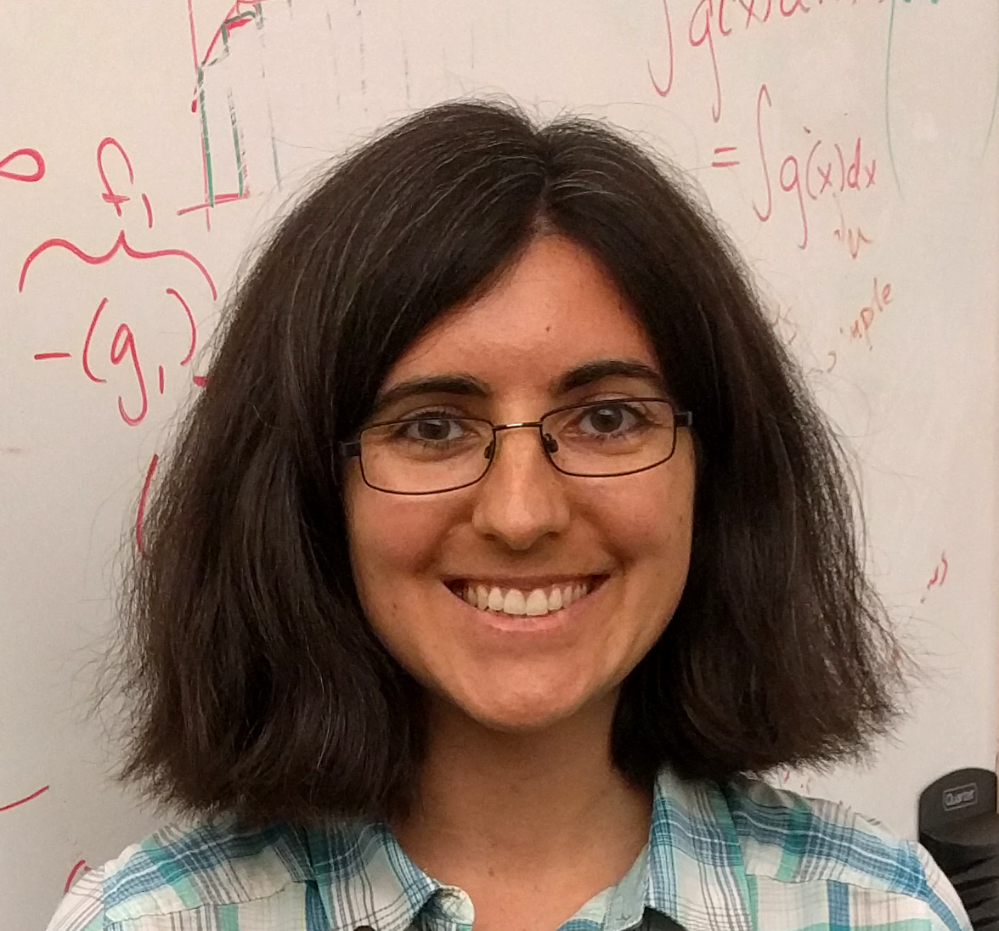
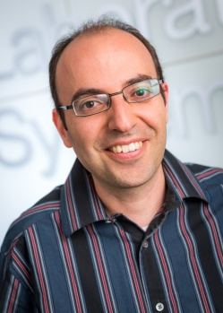
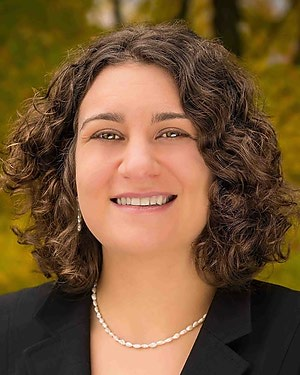
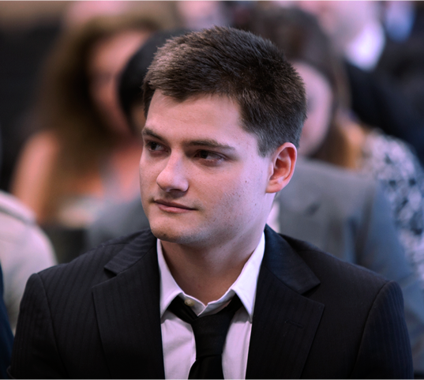
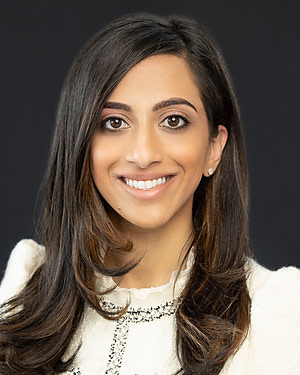

- July 22nd, 8:30AM-5:00PM EST, Friday,2022
- Room 310, The Baltimore Convention Center, Baltimore, Maryland, USA
- Link for virtual
- Registration
Invited speakers
*Listed alphabetically

Tamara Broderick
Associate Professor
EECS Department at Massachusetts Institute of Technology
Jean Fan
Assistant Professor
Biomedical Engineering Department at Johns Hopkins University
Invited panelists
*Listed alphabetically

Mohammad AlQuraishi
Assistant Professor
Columbia University

Elana Fertig
Director of The Research Program in Quantitative Sciences
Johns Hopkins Kimmel Cancer Center

Patrick Schwab
Director
Machine Learning and Artificial Intelligence at GSK

Neeha Zaidi
Assistant Professor
Johns Hopkins Medicine
Accepted Submissions
Poster session 1
- Damiano Sgarbossa (EPFL); Umberto Lupo (EPFL); Anne-Florence Bitbol (EPFL). Generative power of a protein language model trained on multiple sequence alignments. [paper]
- Haoran Zhang (University of Texas at Austin); Wesley Tansey (Memorial Sloan); Jacqueline Chou (Weill Cornell Medical College). BayesTME: A reference-free Bayesian method for end-to-end analysis of spatial transcriptomic data.
- Michail Chatzianastasis (École Polytechnique); Giannis Nikolentzos (Ecole Polytechnique); Michalis Vazirgiannis (École Polytechnique). Mass Enhanced Node Embeddings for Drug Repurposing. [paper]
- Calvin McCarter (Hedgehog Technology). Confounded Domain Adaptation: A Framework for Biological Data Batch Correction.
- Asif Khan (University of Edinburgh); Alexander I Cowen-Rivers (Huawei R&D UK); Derrick-Goh-Xin Deik (Huawei Noahs Ark Lab); Antoine F. Grosnit (Huawei); Philippe Robert (Department of Immunology, University of Oslo); Victor Greiff (Department of Immunology, University of Oslo); Kamil Dreczkowski (Huawei); Rasul Tutunov (Huawei); Dany Bou-Ammar (American University of Beirut Medical Centre); Jun Wang (UCL); Haitham Ammar (Huawei). Trust-region Bayesian optimisation with developability constraints enables sample efficient, high-affinity antibody design.
- Hayda Almeida (UQAM); Adrian Tsang (Concordia University); Abdoulaye Banire Diallo (UQAM). Reinforcement learning to optimize fungal Biosynthetic Gene Clusters. [paper]
- Yiqing Shen (Shanghai Jiao Tong University); Bingxin ZHOU (The University of Sydney); Xinye Xiong (SJTU); Ruitian Gao (Shanghai Jiao Tong University); Yuguang Wang (Shanghai Jiao Tong University). How Graph Neural Networks Enhance Convolutional Neural Networks Towards Mining the Topological Structures from Histology. [paper]
- Abbas-Ali Heydari (University of California, Merced); Oscar Davalos (University of California, Merced); Katrina Hoyer (University of California, Merced); Suzanne Sindi (University of California, Merced). N-ACT: An Interpretable Deep Learning Model for Automatic Cell Type and Salient Gene Identification. [paper]
- Konstantia Georgouli (Lawrence Livermore National Laboratory); Helgi Ingolfur Ingolfsson (Lawrence Livermore National Laboratory); Mark Heimann (Lawrence Livermore); Felice Lightstone (Lawrence Livermore National Laboratory); Peer-Timo Bremer (LLNL); Harsh Bhatia (Lawrence Livermore National Laboratory). Emerging Patterns in the Continuum Representation of Protein-Lipid Fingerprints.
- Harsh Bhatia (Lawrence Livermore National Laboratory); Helgi Ingólfsson (Lawrence Livermore National Laboratory); Felice LIghtstone (Lawrence Livermore National Laboratory); Peer-Timo Bremer (LLNL). Capturing Similarity among Simulated Patches of Human Cell Membrane.
- Fikret Aydin (Lawrence Livermore National Laboratory); Konstantia Georgouli (Lawrence Livermore National Laboratory); Gautham Dharuman (Lawrence Livermore National Laboratory); Jim Glosli (Lawrence Livermore National Laboratory); Felice Lightstone ( Lawrence Livermore National Laboratory); Helgi Ingólfsson (Lawrence Livermore National Laboratory); Peer-Timo Bremer (LLNL); Harsh Bhatia (Lawrence Livermore National Laboratory). Identifying Orientation-specific Lipid-protein Fingerprints using Deep Learning.
- Umberto Lupo (EPFL); Damiano Sgarbossa (EPFL); Anne-Florence Bitbol (EPFL). Protein language models trained on multiple sequence alignments learn phylogenetic relationships. [paper]
- Stephen Y Zhang (University of Melbourne); Michael Stumpf (University of Melbourne). Inferring cell-specific causal regulatory networks from drift and diffusion. [paper]
- Dmitrii Gavrilev (Skolkovo Institute of Science and Technology); Nurlybek Amangeldiuly (Skolkovo Institute of Science and Technology); Sergey Ivanov (Criteo); Evgeny Burnaev (Skoltech). High Performance of Gradient Boosting in Binding Affinity Prediction. [paper]
- Karl Pichotta (Memorial Sloan Kettering Cancer Center); Wesley Tansey (Memorial Sloan). Zero-Shot Prediction of Drug Combination Activity for High-Throughput Screens. [paper]
- Sharrol Bachas (Absci); Goran Rakocevic (AbSci); David Spencer (AbSci); Robel Haile (AbSci); Anand Sastry (Absci); John Sutton (AbSci); George Kasun (AbSci); Christa Kohnert (AbSci); Cailen McCloskey (AbSci); Edriss Yassine (AbSci); Borka Medjo (AbSci); Nebojsa Tijanic (AbSci); Shaheed Abdulhaqq (AbSci); Randal Olsen (AbSci); Jennifer Stanton (AbSci); Bailey White (AbSci); Rebecca Viazzo (AbSci); Rebecca Consbruck (AbSci); Hayley Carter (AbSci); Alexander Brown (AbSci); Joshua Meier (Absci); Matthew Weinstock (AbSci); Gregory Hannum (AbSci); Ariel Schwartz (AbSci); Miles Gander (AbSci); Roberto Spreafico (AbSci). Antibody design by optimization of affinity and naturalness using language models.
- James Leiner (Carnegie Mellon University); Brian Manzo (University of Michigan); Aaditya Ramdas (Carnegie Mellon University); Wesley Tansey (Memorial Sloan). Scalable Causal Structure Learning via Amortized Conditional Randomization Testing.
- Casey Bradshaw (Columbia University); Wesley Tansey (Memorial Sloan). Identifying Spatial Biomarkers from Cellular Imaging Data.
- Daniel Hesslow (LightOn); Niccolò Zanichelli (University of Parma); Pascal Notin (University of Oxford); Iacopo Poli (LightOn); Debora Marks (Harvard). RITA: a Study on Scaling Up Generative Protein Sequence Models. [paper]
- Amir Alavi (Seer Inc); Harendra Guturu (Seer inc); Mahdi Zamanighomi (Seer Inc); Tristan Brown (Seer Inc); Jian Wang (Seer Inc); Sam Cutler (Seer Inc); Biao Li (Seer Inc); Khatereh Motamedchaboki (Seer Inc); Asim Siddiqui (Seer Inc); Serafim Batzoglou (Seer Inc). Learning Batch-Invariant Representations with Domain Adaptation in Large Scale Proteomics Data.
- Haiyi Mao (University of Pittsburgh); Minxue Jia (University of Pittsburgh); Xiaotian Dou (University of Pittsburgh); Haotian Zhang (University of PIttsburgh); Panayiotis Benos (University of Pittsburgh). COEM: Cross-Modal Embedding for MetaCell Identification. [paper]
- Hannes Stärk (Massachusetts Institute of Technology); Octavian Ganea (MIT); Lagnajit Pattanaik (MIT); Dr.Regina Barzilay (Massachusetts institute of technology); Tommi Jaakkola (MIT). EquiBind: Geometric Deep Learning for Drug Binding Structure Prediction.
- Haotian Cui (University of Toronto); Hassaan Maan (University of Toronto); Michael Taylor (University of Toronto); Bo Wang. A Deep Learning Framework for Estimating Cell-specific Kinetic Rates of RNA Velocity. [paper]
- Sophie Jaro (Memorial Sloan Kettering); Benji Freeman (Memorial Sloan Kettering); Tricia Park (Memorial Sloan Kettering); Sam Keene (The Cooper Union); Ed Reznik (Memorial Sloan Kettering Cancer Center); Wesley Tansey (Memorial Sloan). Learning to rank metabolites across datasets.
- Andrew J Jung (University of Toronto); Leo J Lee (University of Toronto); Jiexin Gao; Brendan Frey (U. Toronto). RTfold: RNA secondary structure prediction using deep learning with domain inductive bias. [paper]
- Eric Wu (Stanford University); Alexandro Trevino (Enable Medicine); Zhenqin Wu (Stanford University); Kyle Swanson (Stanford University); Honesty Kim (Enable Medicine); H. Blaize D’Angio (Enable Medicine); Ryan Preska (Enable Medicine); Gregory Charville (Stanford University); Piero Dalerba (Columbia University); Umamaheswar Duvvuri (University of Pittsburgh); A. Dimitrios Colevas (Stanford University); Aaron Mayer (Enable Medicine); James Zou (Stanford University). 7-UP: generating in silico CODEX from a small set of immunofluorescence markers. [paper]
Poster session 2
- Cameron Park (Columbia University); Shouvik Mani (Columbia University); Elham Azizi (Columbia University). DIISCO: Dynamic Intercellular Interactions in Single Cell transcriptOmics.
- Zhenqin Wu (Stanford University); Alexandro Trevino (Enable Medicine); Eric Wu (Stanford University); Kyle Swanson (Stanford University); Honesty Kim (Enable Medicine); H. Blaize D’Angio (Enable Medicine); Ryan Preska (Enable Medicine); Gregory Charville (Stanford University); Piero Dalerba (Columbia University); Ann Marie Egloff (Brigham and Women’s Hospital); Ravindra Uppaluri (Dana-Farber Cancer Institute); Umamaheswar Duvvuri (University of Pittsburgh); Aaron Mayer (Enable Medicine); James Zou (Stanford University). SPACE-GM: geometric deep learning of disease-associated microenvironments from multiplex spatial protein profiles.
- Prashnna K Gyawali (Stanford University); Yann Guen (Stanford University); Xiaoxia Liu (Stanford University); Hua Tang (Stanford University); James Zou (Stanford University); Zihuai He (Stanford University). Disentangling ancestry representations for improving genetic risk prediction across diverse population.
- Shounak Chattopadhyay (Duke University); Rungang Han (Duke University); David Dunson (Duke University); Wesley Tansey (Memorial Sloan). Hierarchically weighted mixture modeling of drug combination responses.
- Jan Engelmann (Helmholtz Munich); Leon Hetzel (Helmholtz Munich, TUM); Giovanni Palla (Helmholtz Munich, TUM); Lisa Sikkema (Helmholtz Munich, TUM); Malte Luecken (Helmholtz Munich); Fabian Theis. Uncertainty Quantification for Atlas-Level Cell Type Transfer. [paper]
- Michael Murphy (MIT); Kevin Yang (Microsoft); Stefanie Jegelka (MIT); Ernest Fraenkel (MIT). Learning representations from mass spectra for peptide property prediction. [paper]
- Lechuan Li (Rice University); Ruth Dannenfelser (Rice University); Yu Zhu (Rice University); Nathaniel Hejduk (Rice University); Santiago Segarra (Rice University); Vicky Yao (Rice University). Joint Embedding of Biological Networks for Cross-Species Functional Alignment.
- Kemal Inecik (Institute of Computational Biology, Helmholtz Center); Andreas Uhlmann (Institute of Computational Biology, Helmholtz Center); mohammad lotfollahi (Helmholtz Zentrum München); Fabian Theis. MultiCPA: Multimodal Compositional Perturbation Autoencoder. [paper]
- Peter D Tonner (National Institute of Standard and Technology); Abe Pressman (National Institute of Standards and Technology); David Ross (National Institute of Standards and Technology). LANTERN: An Interpretable Genotype-Phenotype Landscape Model.
- Amine M. Remita (Université du Québec à Montréal); Abdoulaye Banire Diallo (Université du Québec à Montréal). Toward Inferring Ancestral States and Evolutionary Parameters using a Variational Generative Model for Multiple Sequence Alignments. [paper]
- Vincent Zaballa (University of California Irvine); Elliot Hui (University of California Irvine). An Optimal Likelihood Free Method for Biological Model Selection. [paper]
- Andrea Karlova (UCL); Wim Dehaen (VSCHT); Andrei Penciu (April19 Discovery Inc); Richard Dallaway (April19 Discovery Inc); Suran Goonatilake (April19 Discovery Inc). PEPSI: Post-docking Evaluation with Protein-Small Molecules Interaction. [paper]
- Gary Yao (Mayo Clinic). Combating Extreme Adversarial Vulnerabilities in WSI Classification. [paper]
- David Liu (Stanford University); Ligia Melo (Stanford University); Allan Costa (Center for Bits and Atoms); Martin Vögele (Stanford University); Raphael Townshend (Stanford University); Ron Dror (Stanford University). Euclidean Transformers for Macromolecular Structures: Lessons Learned. [paper]
- Robert Palovics (Stanford University); Tony Wyss-Coray (Stanford University); Baharan Mirzasoleiman (UCLA). Purification of single-cell transcriptomics data with coreset selection. [paper]
- Soroor Hediyeh-zadeh (Institute of Computational Biology); Mohammad Lotfollahi (Helmholtz Zentrum München); Fabian Theis. Continual single-cell architecture surgery for reference mapping. [paper]
- Onuralp Soylemez (Global Blood Therapeutics). Bayesian tensor factorization for predicting clinical outcomes using integrated human genetics evidence. [paper]
- Achille Nazaret (Columbia University); Joy Fan (Columbia University); Dana Pe'er (Memorial Sloan Kettering Cancer Center); Elham Azizi (Columbia University). Probabilistic basis decomposition for characterizing temporal dynamics of gene expression. [paper]
- Hagai M Kariti (Technion)*; Noam Kaplan (Technion). A mechanistic probabilistic model of genomic compartments.
- Kieran Elmes (University of Canterbury; University of Otago); Diana Benavides Prado (The University of Auckland); Michael J Witbrock (University of Auckland); Alex Gavryushkin (University of Canterbury). SNVformer: An Attention-based Deep Neural Network for GWAS Data. [paper]
- Shiva Ebrahimi ( University of North Texas ) ; Xuan Guo ( University of North Texas ). Deep Active Learning for De Novo Peptide Sequencing from Data-independent-acquisition Mass Spectrometry. [paper]
- Christopher Hendra (National University of Singapore); Jonathan Göke (Genomics Institute of Singapore, A*STAR, Singapore); Alex Thiery (National University of Singapore). Extracting Part of Signal Representation from Direct RNA Squiggle for Modification Detection. [paper]
- Kevin Wu (Stanford); Katie Yost (Stanford University); Bence Daniel (Stanford University); Julia Belk (Stanford University); Yu Xia (Washington University in St. Louis); Takeshi Egawa (Washington University in St. Louis); Ansuman Satpathy (Stanford University); Howard Chang (Stanford University); James Zou (Stanford University). TCR-BERT: learning the grammar of T-cell receptors for flexible antigen-binding analyses. [paper]
- Jiayang Chen (The Chinese University of Hong Kong); Zhihang Hu (The Chinese University of Hong Kong); Siqi Sun (Fudan University); Qingxiong Tan (Department of Computer Science, Hong Kong Baptist University); Yixuan Wang (Harbin Institute of Technology); Qinze Yu (University of Electronic Science and Technology of China); Licheng Zong (The Chinese University of Hong Kong); Liang Hong (The Chinese University of Hong Kong); Jin Xiao (The Chinese University of Hong Kong); Irwin King (The Chinese University of Hong Kong); Yu Li (The Chinese University of Hong Kong). Interpretable RNA Foundation Model from Unannotated Data for Highly Accurate RNA Structure and Function Predictions.
- Pooja Kathail (UC Berkeley)*; Richard W Shuai (UC Berkeley); Ryan Chung (UC Berkeley); Chun Ye (UCSF); Gabriel Loeb (UCSF); Nilah Ioannidis (University of California, Berkeley). Assessing the utility of genomic deep learning models for disease-relevant variant effect prediction. [paper]
- Yanan Long (University of Chicago); Horace Pan (University of Chicago). Molecular Fingerprints Are a Simple Yet Effective Solution to the Drug–Drug Interaction Problem. [paper]
Diversity and Inclusion
ICML Workshop on Computational Biology aims to foster an inclusive and welcoming community.
If you have any questions, comments, or concerns, please reach out to workshopcompbio@gmail.com.
We are also featuring other workshops that you might find helpful for diversity and inclusion.
Queer in AI
Diversity Fellowship
We are pleased to announce that we will continue our Diversity Fellowship for students this year.
Awards include a free virtual or in-person workshop registration. We encourage applications from underrepresented groups. The deadline is July 15th. Apply here.
Steering committee
Dana Pe’er: mskcc.org/research/ski/labs/dana-pe-er
Debora Marks: https://www.deboramarkslab.com/
Elham Azizi: https://www.azizilab.com/
Sandhya Prabhakaran: sandhyaprabhakaran.com
Abdoulaye Baniré Diallo: labo.bioinfo.uqam.ca
Alexander Anderson: labpages.moffitt.org/andersona/
Wesley Tansey: http://wesleytansey.com
Julia E. Vogt: mds.inf.ethz.ch/team/detail/julia-vogt/
Organizing committee
Yubin Xie: yux2009@med.cornell.edu
Cassandra Burdziak: cnb3001@med.cornell.edu
Amine Remita: remita.amine@courrier.uqam.ca
Mafalda Dias: mafalda_dias@hms.harvad.edu
Mauricio Tec: mauriciogtec@utexas.edu
Cameron Park: cyp2111@columbia.edu
Achille Nazaret: aon2108@columbia.edu
Pascal Notin: pascal.notin@cs.ox.ac.uk
Steffan Paul: steffanpaul@g.harvard.edu
Program Committee
Abdoulaye Banire Diallo, Université du Québec à Montréal
Achille Nazaret, Columbia University
Adam Gayoso, UC Berkeley
Adrian Heilbut, logphase research
Ahmed Halioui, Mt Intelligent Machines
Alice Bizeul, ETHZ
Amine Remita, Université du Québec à Montréal
Andreas Kirsch, University of Oxford
Anne Siegel, CNRS
Bishnu Sarker, Inria
Bo Yuan, Harvard University
Cameron Park, Columbia University
Cassandra Burdziak, Memorial Sloan Kettering Cancer Center
Chensu Xie, Weill Cornell Medicine
Chetanya Pandya, 2seventy bio
Christopher Garay, Paradigm4
Debora Marks, Harvard Medical School
Doron Haviv, Cornell
Elham Azizi, Columbia University
Elior Rahmani, UCLA
Elisabetta De Maria, Université Côte d'Azur
Freddie Bickford Smith, University of Oxford
Gilles Gut, ETH Zürich
Han Yuan, Calico Life Sciences
Hayda Almeida, UQAM
Imant Daunhawer, ETH Zurich
Jan Brauner, University of Oxford
Khalil Ouardini, Owkin
Lood van Niekerk, Harvard Medical School
Luis Rueda, University of Windsor
Mafalda Dias, Harvard Medical School
Manu Setty, SKI
Matthew Peterson, Paradigm4
Mauricio Tec, University of Texas at Austin
Mengting Gu, Visa Research
Mervin Fansler, MSKCC
Mika Jain, Stanford University
Mohammad Lotfollahi, Helmholtz Zentrum München
Nazim Bouatta, Harvard
Neil Band, University of Oxford
Niina Haiminen, IBM T. J. Watson Research Center
Pascal Notin, University of Oxford
Peter Koo, Cold Spring Harbor Laboratory
Ričards Marcinkevičs, ETH Zurich
Romain Lopez, UC Berkeley
Sabeur Aridhi, LORIA
Sandhya Prabhakaran, Moffitt Cancer Center
Sarvesh Nikumbh, Imperial College London and MRC London Institute of Medical Sciences
Sheng Liu, Indiana University School of Medicine
Smita Krishnaswamy, Yale University
Steffan Paul, Harvard Medical School
Thomas Sutter, ETH Zurich
Vianne Gao, Weill Medical College
Victor Greiff, Department of Immunology, University of Oslo
Warith Eddine DJEDDI, FST Manar
Xiang Niu, Memorial Sloan Kettering Cancer Center
Yubin Xie, Memorial Sloan Kettering Cancer Center
Yuelin Shi, California Institute of Technology